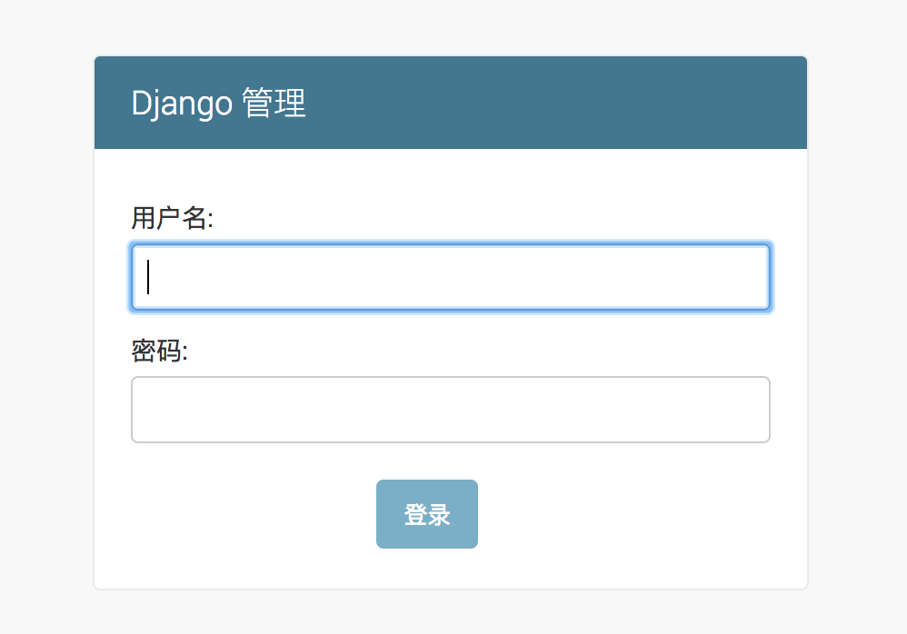
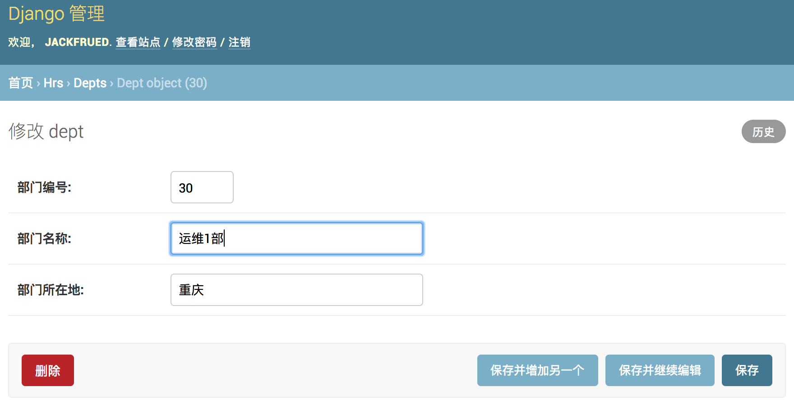

datetime:2019/6/10 10:01
author:nzb
深入模型
在上一个章节中，我们提到了Django是基于MVC架构的Web框架，MVC架构追求的是“模型”和“视图”的解耦合。所谓“模型”说得更直白一些就是数据，所以通常也被称作“数据模型”。在实际的项目中，数据模型通常通过数据库实现持久化操作，而关系型数据库在很长一段时间都是持久化的首选方案，下面我们以MySQL为例来说明如何使用关系型数据库来实现持久化操作。
配置关系型数据库MySQL
我们继续来完善上一个章节中的OA项目，首先从配置项目使用的数据库开始。
修改项目的settings.py文件，首先将我们之前创建的应用hrs添加已安装的项目中，然后配置MySQL作为持久化方案。
(venv)$ cd oa/settings.py
# 此处省略上面的代码
INSTALLED_APPS = [
'django.contrib.admin',
'django.contrib.auth',
'django.contrib.contenttypes',
'django.contrib.sessions',
'django.contrib.messages',
'django.contrib.staticfiles',
'hrs',
]
DATABASES = {
'default': {
'ENGINE': 'django.db.backends.mysql',
'NAME': 'oa',
'HOST': 'localhost',
'PORT': 3306,
'USER': 'root',
'PASSWORD': '123456',
}
}
# 此处省略下面的代码
在配置ENGINE属性时，常用的可选值包括：
- `'django.db.backends.sqlite3'`：SQLite嵌入式数据库。
- `'django.db.backends.postgresql'`：BSD许可证下发行的开源关系型数据库产品。
- `'django.db.backends.mysql'`：转手多次目前属于甲骨文公司的经济高效的数据库产品。
- `'django.db.backends.oracle'`：甲骨文公司的关系型数据库旗舰产品。
其他的配置可以参考官方文档中数据库配置的部分。
NAME属性代表数据库的名称，如果使用SQLite它对应着一个文件，在这种情况下NAME的属性值应该是一个绝对路径；使用其他关系型数据库，则要配置对应的HOST（主机）、PORT（端口）、USER（用户名）、PASSWORD（口令）等属性。
安装MySQL客户端工具，Python 3中使用PyMySQL，Python 2中用MySQLdb。
(venv)$ pip install pymysql如果使用Python 3需要修改项目的
__init__.py文件并加入如下所示的代码，这段代码的作用是将PyMySQL视为MySQLdb来使用，从而避免Django找不到连接MySQL的客户端工具而询问你：“Did you install mysqlclient? ”（你安装了mysqlclient吗？）。
import pymysql
pymysql.install_as_MySQLdb()
运行manage.py并指定migrate参数实现数据库迁移，为应用程序创建对应的数据表，当然在此之前需要先启动MySQL数据库服务器并创建名为oa的数据库，在MySQL中创建数据库的语句如下所示。
drop database if exists oa; create database oa default charset utf8;(venv)$ cd .. (venv)$ python manage.py migrate Operations to perform: Apply all migrations: admin, auth, contenttypes, sessions Running migrations: Applying contenttypes.0001_initial... OK Applying auth.0001_initial... OK Applying admin.0001_initial... OK Applying admin.0002_logentry_remove_auto_add... OK Applying contenttypes.0002_remove_content_type_name... OK Applying auth.0002_alter_permission_name_max_length... OK Applying auth.0003_alter_user_email_max_length... OK Applying auth.0004_alter_user_username_opts... OK Applying auth.0005_alter_user_last_login_null... OK Applying auth.0006_require_contenttypes_0002... OK Applying auth.0007_alter_validators_add_error_messages... OK Applying auth.0008_alter_user_username_max_length... OK Applying auth.0009_alter_user_last_name_max_length... OK Applying sessions.0001_initial... OK
4.
可以看到，Django帮助我们创建了10张表，这些都是使用Django框架需要的东西，稍后我们就会用到这些表。除此之外，我们还应该为我们自己的应用创建数据模型。如果要在hrs应用中实现对部门和员工的管理，我们可以创建如下所示的数据模型。
(venv)$ vim hrs/models.py
from django.db import models
class Dept(models.Model):
"""部门类"""
no = models.IntegerField(primary_key=True, db_column='dno', verbose_name='部门编号')
name = models.CharField(max_length=20, db_column='dname', verbose_name='部门名称')
location = models.CharField(max_length=10, db_column='dloc', verbose_name='部门所在地')
class Meta:
db_table = 'tb_dept'
class Emp(models.Model):
"""员工类"""
no = models.IntegerField(primary_key=True, db_column='eno', verbose_name='员工编号')
name = models.CharField(max_length=20, db_column='ename', verbose_name='员工姓名')
job = models.CharField(max_length=10, verbose_name='职位')
# 自参照完整性多对一外键关联
mgr = models.ForeignKey('self', on_delete=models.SET_NULL, null=True, blank=True, verbose_name='主管编号')
sal = models.DecimalField(max_digits=7, decimal_places=2, verbose_name='月薪')
comm = models.DecimalField(max_digits=7, decimal_places=2, null=True, blank=True, verbose_name='补贴')
# 多对一外键关联
dept = models.ForeignKey(Dept, db_column='dno', on_delete=models.PROTECT, verbose_name='所在部门')
class Meta:
db_table = 'tb_emp'
说明：上面定义模型时使用了字段类及其属性，其中IntegerField对应数据库中的integer类型，CharField对应数据库的varchar类型，DecimalField对应数据库的decimal类型，ForeignKey用来建立多对一外键关联。字段属性primary_key用于设置主键，max_length用来设置字段的最大长度，db_column用来设置数据库中与字段对应的列，verbose_name则设置了Django后台管理系统中该字段显示的名称。如果对这些东西感到很困惑也不要紧，文末提供了字段类、字段属性、元数据选项等设置的相关说明，不清楚的读者可以稍后查看对应的参考指南。
通过模型创建数据表。
(venv)$ python manage.py makemigrations hrs Migrations for 'hrs': hrs/migrations/0001_initial.py - Create model Dept - Create model Emp (venv)$ python manage.py migrate Operations to perform: Apply all migrations: admin, auth, contenttypes, hrs, sessions Running migrations: Applying hrs.0001_initial... OK执行完数据模型迁移操作之后，可以在通过图形化的MySQL客户端工具查看到E-R图（实体关系图）。

在后台管理模型
创建超级管理员账号。
(venv)$ python manage.py createsuperuser Username (leave blank to use 'hao'): jackfrued Email address: jackfrued@126.com Password: Password (again): Superuser created successfully.启动Web服务器，登录后台管理系统。
(venv)$ python manage.py runserver访问http://127.0.0.1:8000/admin，会来到如下图所示的登录界面。

登录后进入管理员操作平台。

至此我们还没有看到之前创建的模型类，需要在应用的admin.py文件中模型进行注册。
注册模型类。
(venv)$ vim hrs/admin.py
from django.contrib import admin
from hrs.models import Emp, Dept
admin.site.register(Dept)
admin.site.register(Emp)
注册模型类后，就可以在后台管理系统中看到它们。

对模型进行CRUD操作。
可以在管理员平台对模型进行C（新增）R（查看）U（更新）D（删除）操作，如下图所示。
添加新的部门。

查看所有部门。

更新和删除部门。

注册模型管理类。
再次修改admin.py文件，通过注册模型管理类，可以在后台管理系统中更好的管理模型。
from django.contrib import admin
from hrs.models import Emp, Dept
class DeptAdmin(admin.ModelAdmin):
list_display = ('no', 'name', 'location')
ordering = ('no',)
class EmpAdmin(admin.ModelAdmin):
list_display = ('no', 'name', 'job', 'mgr', 'sal', 'comm', 'dept')
search_fields = ('name', 'job')
admin.site.register(Dept, DeptAdmin)
admin.site.register(Emp, EmpAdmin)


为了更好的查看模型数据，可以为Dept和Emp两个模型类添加__str__魔法方法。
from django.db import models
class Dept(models.Model):
"""部门类"""
# 此处省略上面的代码
def __str__(self):
return self.name
# 此处省略下面的代码
class Emp(models.Model):
"""员工类"""
# 此处省略上面的代码
mgr = models.ForeignKey('self', on_delete=models.SET_NULL, null=True, blank=True, verbose_name='直接主管')
# 此处省略下面的代码
# 此处省略上面的代码
def __str__(self):
return self.name
# 此处省略下面的代码
修改代码后刷新查看Emp模型的页面，效果如下图所示。

模型管理类详细配置
models.py
from datetime import datetime
from DjangoUeditor.models import UEditorField
from django.db import models
from organization.models import CourseOrg, Teacher
# Create your models here.
class Course(models.Model):
course_org = models.ForeignKey(CourseOrg, verbose_name=u'课程机构', null=True, blank=True, on_delete=models.CASCADE)
name = models.CharField(max_length=50, verbose_name=u'课程名称')
desc = models.CharField(max_length=300, verbose_name=u'课程描述')
# 使用富文本编辑器插件, ueditor的上传路径固定在ueditor目录下。文件名查看官方文档的变量设置
detail = UEditorField(verbose_name=u'课程详情', width=600, height=300, imagePath="courses/ueditor/",
filePath="courses/ueditor/", default=u'')
is_banner = models.BooleanField(default=False, verbose_name=u'是否轮播')
teacher = models.ForeignKey(Teacher, verbose_name=u'讲师', null=True, blank=True, on_delete=models.CASCADE)
degree = models.CharField(verbose_name=u'难度', choices=(('cj', u'初级'), ('zj', u'中级'), ('gj', u'高级')), max_length=2)
learn_times = models.IntegerField(default=0, verbose_name=u'学习时长')
students = models.IntegerField(default=0, verbose_name=u'学习人数')
fav_nums = models.IntegerField(default=0, verbose_name=u'收藏人数')
image = models.ImageField(upload_to='courses/%Y/%m', verbose_name=u'封面图', max_length=100, null=True, blank=True)
click_nums = models.IntegerField(default=0, verbose_name=u'点击数')
category = models.CharField(default=u'后端开发', max_length=20, verbose_name=u'课程类别')
tag = models.CharField(default='', verbose_name=u'课程标签', max_length=10, )
youneed_know = models.CharField(max_length=300, verbose_name=u'课程须知', default='')
what_you_learn = models.CharField(default='', max_length=300, verbose_name=u'老师告诉你能学到什么')
add_time = models.DateTimeField(default=datetime.now, verbose_name=u'添加时间')
class Meta:
verbose_name = u'课程'
verbose_name_plural = verbose_name
#
# def __unicode__(self):
# return self.name
def get_lesson_nums(self):
"""
获取章节数
:return: 章节数
"""
return self.lesson_set.all().count()
# 给个显示名字
get_lesson_nums.short_description = u'章节数'
# 跳转函数
def go_to(self):
from django.utils.safestring import mark_safe
return mark_safe("<a href='http://www.bilibili.com'>跳转</a>")
go_to.short_description = u'跳转'
def get_learn_users(self):
"""
获取学习用户
:return: 学习用户
"""
return self.usercourse_set.all()[:5]
def get_lesson(self):
"""
获取课程所有章节
:return:
"""
return self.lesson_set.all()
# def get_user(self):
# """
# 获取课程所有章节
# :return:
# """
# return self.lesson_set.all()
def __str__(self):
return self.name
class BannerCourse(Course):
"""轮播课程model继承于Course,拥有Course所有方法和属性"""
class Meta:
verbose_name = u'轮播课程'
verbose_name_plural = verbose_name
# proxy必须设置为True,就不会另外生产一张表而是和Course同一张表
proxy = True
class Lesson(models.Model):
course = models.ForeignKey(Course, verbose_name=u'课程', on_delete=models.CASCADE)
name = models.CharField(max_length=100, verbose_name=u'章节名')
add_time = models.DateTimeField(default=datetime.now, verbose_name=u'添加时间')
class Meta:
verbose_name = u'章节'
verbose_name_plural = verbose_name
def get_lesson_video(self):
"""
获取章节视频信息
"""
return self.video_set.all()
def __str__(self):
return self.name
class Video(models.Model):
lesson = models.ForeignKey(Lesson, verbose_name=u'章节', on_delete=models.CASCADE)
name = models.CharField(max_length=100, verbose_name=u'视频名')
url = models.CharField(default='', max_length=200, verbose_name=u'访问地址')
learn_times = models.IntegerField(default=0, verbose_name=u'学习时长')
add_time = models.DateTimeField(default=datetime.now, verbose_name=u'添加时间')
class Meta:
verbose_name = u'视频'
verbose_name_plural = verbose_name
def __str__(self):
return self.name
class CourseResource(models.Model):
course = models.ForeignKey(Course, verbose_name=u'课程', on_delete=models.CASCADE)
name = models.CharField(max_length=100, verbose_name=u'名称')
download = models.FileField(upload_to='course/%Y/%m', verbose_name=u'资源文件', max_length=100)
add_time = models.DateTimeField(default=datetime.now, verbose_name=u'添加时间')
class Meta:
verbose_name = u'课程资源'
verbose_name_plural = verbose_name
def __str__(self):
return self.name
adminx.py
import xadmin
from .models import Course, Lesson, Video, CourseResource, BannerCourse
# 配置主题功能
class BaseSetting(object):
enable_themes = True
use_bootswatch = True
# 全局头部脚步配置
class GlobalSettings(object):
site_title = '慕课网'
site_footer = '慕课在线网'
menu_style = 'accordion'
# inline模式，只能一层嵌套，不能多层嵌套，但可以多个
class LessonInline(object):
model = Lesson
extra = 0
class CourseResourceInline(object):
model = CourseResource
extra = 0
class CourseAdmin(object):
"""
课程管理器
"""
# 显示的字段，还可以显示函数，可以加入model中定义的函数如获取章节数：get_lesson_nums,go_to
list_display = ['name', 'course_org', 'desc', 'detail', 'degree', 'learn_times', 'students', 'fav_nums', 'image',
'click_nums',
'add_time', 'get_lesson_nums', 'go_to']
# 搜索功能
search_fields = ['name', 'desc', 'detail', 'degree', 'learn_times', 'students', 'fav_nums', 'image', 'click_nums']
# 过滤器
list_filter = ['name', 'desc', 'detail', 'degree', 'learn_times', 'students', 'fav_nums', 'image', 'click_nums',
'add_time']
# ico图标
model_icon = 'fa fa-file'
# 当有一个model有一个外键指向它时，它是ajax加载方式完成，数据量过大时很有用，可进行搜索而不是下拉式
relfield_style = 'fk-ajax'
# 排序规则
ordering = ['-click_nums']
# 设置某些字段为只读
readonly_fields = ['click_nums']
# 设置某些字段不显示,和上面的设置会冲突，所以某个字段只能设置其中一个
exclude = ['fav_nums']
# 展示页面中直接修改功能
list_editable = ['degree', 'desc']
# inlines 设置
inlines = [LessonInline, CourseResourceInline]
# 自定义刷新时间,配置多个页面中可选
refresh_times = [3, 5]
# 插件配置
# 1、指明某个字段用的是什么样式，下面就是指明detail是ueditor样式
style_fields = {"detail": "ueditor"}
# 2、Excel导入导出功能,True为开启
list_export = ['xls', 'xml', 'json']
import_excel = True
# 重载方法过滤课程
def queryset(self):
qs = super(CourseAdmin, self).queryset()
qs = qs.filter(is_banner=False)
return qs
def save_models(self):
# 在保存课程的时候统计机构的课程数
obj = self.new_obj
# 查询前先保存才能增加新增的数量
obj.save()
if obj.course_org is not None:
course_org = obj.course_org
course_org.course_nums = Course.objects.filter(course_org=course_org).count()
course_org.save()
def post(self, request, *args, **kwargs):
# 导入逻辑
if 'excel' in request.FILES:
pass
return super(CourseAdmin, self).post(request, args, kwargs)
class BannerCourseAdmin(object):
"""
轮播课程管理器，和上面的课程管理器管理的是同一张表
"""
list_display = ['name', 'course_org', 'desc', 'detail', 'degree', 'learn_times', 'students', 'fav_nums', 'image',
'click_nums', 'add_time']
search_fields = ['name', 'desc', 'detail', 'degree', 'learn_times', 'students', 'fav_nums', 'image',
'click_nums']
list_filter = ['name', 'desc', 'detail', 'degree', 'learn_times', 'students', 'fav_nums', 'image', 'click_nums',
'add_time']
model_icon = 'fa fa-file'
# 排序规则
ordering = ['-click_nums']
# 设置某些字段为只读
readonly_fields = ['click_nums']
# 设置某些字段不显示,和上面的设置会冲突，所以某个字段只能设置其中一个
exclude = ['fav_nums']
# inlines 设置
inlines = [LessonInline, CourseResourceInline]
# 重载方法过滤课程
def queryset(self):
qs = super(BannerCourseAdmin, self).queryset()
qs = qs.filter(is_banner=True)
return qs
class LessonAdmin(object):
list_display = ['course', 'name', 'add_time']
search_fields = ['course', 'name']
list_filter = ['course__name', 'name', 'add_time'] # course__name外键设置
model_icon = 'fa fa-file-o'
class VideoAdmin(object):
list_display = ['lesson', 'name', 'add_time']
search_fields = ['lesson', 'name']
list_filter = ['lesson__name', 'name', 'add_time'] # course__name外键设置
model_icon = 'fa fa-file-video-o'
class CourseResourceAdmin(object):
list_display = ['course', 'name', 'download', 'add_time']
search_fields = ['course', 'name', 'download']
list_filter = ['course__name', 'name', 'download', 'add_time']
model_icon = 'fa fa-file-archive-o'
xadmin.site.register(Course, CourseAdmin)
xadmin.site.register(BannerCourse, BannerCourseAdmin)
xadmin.site.register(Lesson, LessonAdmin)
xadmin.site.register(Video, VideoAdmin)
xadmin.site.register(CourseResource, CourseResourceAdmin)
xadmin.site.register(views.BaseAdminView, BaseSetting)
xadmin.site.register(views.CommAdminView, GlobalSettings)
Django_xadmin开启excel导入功能
# 文件路径：xadmin/plugins/execl.py
from xadmin.sites import site
from xadmin.views import BaseAdminPlugin, ListAdminView
from django.template import loader
from xadmin.plugins.utils import get_context_dict
# excel 导入
class ListImportExcelPlugin(BaseAdminPlugin):
import_excel = False
def init_request(self, *args, **kwargs):
return bool(self.import_excel)
def block_top_toolbar(self, context, nodes):
nodes.append(loader.render_to_string('xadmin/excel/model_list.top_toolbar.import.html',
context=get_context_dict(context)))
xadmin.site.register_plugin(ListImportExcelPlugin, ListAdminView)
# 模板文件：xadmin/templates/xadmin/excel/model_list.top_toolbar.import.html
{ % load
i18n %}
< div
class ="btn-group export" >
< a
class ="dropdown-toggle btn btn-default btn-sm" data-toggle="dropdown" href="#" >
< i
class ="icon-share" > < / i > 导入1 < span class ="caret" > < / span >
< / a >
< ul
class ="dropdown-menu" role="menu" aria-labelledby="dLabel" >
< li > < a
data - toggle = "modal"
data - target = "#export-modal-import-excel" > < i
class ="icon-circle-arrow-down" > < / i > 导入 Excel < / a > < / li >
< / ul >
< script >
function
fileChange(target)
{
// 检测上传文件的类型
var
imgName = document.all.submit_upload.value;
var
ext, idx;
if (imgName == '')
{
document.all.submit_upload_b.disabled = true;
alert("请选择需要上传的 xls 文件!");
return;
} else {
idx = imgName.lastIndexOf(".");
if (idx != -1){
ext = imgName.substr(idx+1).toUpperCase();
ext = ext.toLowerCase( );
{ # alert("ext="+ext);#}
if (ext != 'xls' & & ext != 'xlsx'){
document.all.submit_upload_b.disabled=true;
alert("只能上传 .xls 类型的文件!");
return;
}
} else {
document.all.submit_upload_b.disabled = true;
alert("只能上传 .xls 类型的文件!");
return;
}
}
}
< / script >
< div
id = "export-modal-import-excel"
class ="modal fade" >
< div
class ="modal-dialog" >
< div
class ="modal-content" >
< form
method = "post"
action = ""
enctype = "multipart/form-data" >
{ % csrf_token %}
< div
class ="modal-header" >
< button
type = "button"
class ="close" data-dismiss="modal" aria-hidden="true" > & times; < / button >
< h4
class ="modal-title" > 导入 Excel < / h4 >
< / div >
< div
class ="modal-body" >
< input
type = "file"
onchange = "fileChange(this)"
name = "excel"
id = "submit_upload" >
< / div >
< div
class ="modal-footer" >
< button
type = "button"
class ="btn btn-default" data-dismiss="modal" > { % trans "Close" % } < / button >
< button
class ="btn btn-success" type="submit" id="submit_upload_b" > < i class ="icon-share" > < / i > 导入 < / button >
< / div >
< / form >
< / div > <!-- /.modal - content -->
< / div > <!-- /.modal - dalog -->
< / div > <!-- /.modal -->
< / div >
# adminx.py文件
class maintenanceRecordListAdmin(object):
list_display = [...]
search_fields = [...]
list_filter = [...]
list_editable = [...]
readonly_fields = [...]
# excel导入导出功能
list_export = ['xls', 'xml', 'json']
import_excel = True
def post(self, request, *args, **kwargs):
# 导入逻辑
if 'excel' in request.FILES:
pass
return super(maintenanceRecordListAdmin, self).post(request, args, kwargs)
使用ORM完成模型的CRUD操作
在了解了Django提供的模型管理平台之后，我们来看看如何从代码层面完成对模型的CRUD（Create / Read / Update / Delete）操作。我们可以通过manage.py开启Shell交互式环境，然后使用Django内置的ORM框架对模型进行CRUD操作。
(venv)$ python manage.py shell
Python 3.6.4 (v3.6.4:d48ecebad5, Dec 18 2017, 21:07:28)
[GCC 4.2.1 (Apple Inc. build 5666) (dot 3)] on darwin
Type "help", "copyright", "credits" or "license" for more information.
(InteractiveConsole)
>>>
新增
>>> from hrs.models import Dept, Emp
>>> dept = Dept(40, '研发2部', '深圳')
>>> dept.save()
更新
>>> dept.name = '研发3部'
>>> dept.save()
查询
查询所有对象。
>>> Dept.objects.all()
<QuerySet [<Dept: 研发1部>, <Dept: 销售1部>, <Dept: 运维1部>, <Dept: 研发3部>]>
过滤数据。
>>> Dept.objects.filter(name='研发3部') # 查询部门名称为“研发3部”的部门
<QuerySet [<Dept: 研发3部>]>
>>>
>>> Dept.objects.filter(name__contains='研发') # 查询部门名称包含“研发”的部门(模糊查询)
<QuerySet [<Dept: 研发1部>, <Dept: 研发3部>]>
>>>
>>> Dept.objects.filter(no__gt=10).filter(no__lt=40) # 查询部门编号大于10小于40的部门
<QuerySet [<Dept: 销售1部>, <Dept: 运维1部>]>
>>>
>>> Dept.objects.filter(no__range=(10, 30)) # 查询部门编号在10到30之间的部门
<QuerySet [<Dept: 研发1部>, <Dept: 销售1部>, <Dept: 运维1部>]>
查询单个对象。
>>> Dept.objects.get(pk=10)
<Dept: 研发1部>
>>>
>>> Dept.objects.get(no=20)
<Dept: 销售1部>
>>>
>>> Dept.objects.get(no__exact=30)
<Dept: 运维1部>
>>>
>>> Dept.objects.filter(no=10).first()
<Dept: 研发1部>
排序数据。
>>> Dept.objects.order_by('no') # 查询所有部门按部门编号升序排列
<QuerySet [<Dept: 研发1部>, <Dept: 销售1部>, <Dept: 运维1部>, <Dept: 研发3部>]>
>>>
>>> Dept.objects.order_by('-no') # 查询所有部门按部门编号降序排列
<QuerySet [<Dept: 研发3部>, <Dept: 运维1部>, <Dept: 销售1部>, <Dept: 研发1部>]>
切片数据。
>>> Dept.objects.order_by('no')[0:2] # 按部门编号排序查询1~2部门
<QuerySet [<Dept: 研发1部>, <Dept: 销售1部>]>
>>>
>>> Dept.objects.order_by('no')[2:4] # 按部门编号排序查询3~4部门
<QuerySet [<Dept: 运维1部>, <Dept: 研发3部>]>
高级查询。
>>> Emp.objects.filter(dept__no=10) # 根据部门编号查询该部门的员工
<QuerySet [<Emp: 乔峰>, <Emp: 张无忌>, <Emp: 张三丰>]>
>>>
>>> Emp.objects.filter(dept__name__contains='销售') # 查询名字包含“销售”的部门的员工
<QuerySet [<Emp: 黄蓉>]>
>>>
>>> Dept.objects.get(pk=10).emp_set.all() # 通过部门反查部门所有的员工
<QuerySet [<Emp: 乔峰>, <Emp: 张无忌>, <Emp: 张三丰>]>
说明1：由于员工与部门之间存在多对一外键关联，所以也能通过部门反向查询该部门的员工（从一对多关系中“一”的一方查询“多”的一方），反向查询属性默认的名字是
类名小写_set（如上面例子中的emp_set），当然也可以在创建模型时通过ForeingKey的related_name属性指定反向查询属性的名字。如果不希望执行反向查询可以将related_name属性设置为'+'或以'+'开头的字符串。说明2：查询多个对象的时候返回的是QuerySet对象，QuerySet使用了惰性查询，即在创建QuerySet对象的过程中不涉及任何数据库活动，等真正用到对象时（求值QuerySet）才向数据库发送SQL语句并获取对应的结果，这一点在实际开发中需要引起注意！
说明3：可以在QuerySet上使用
update()方法一次更新多个对象。
删除
>>> Dept.objects.get(pk=40).delete()
(1, {'hrs.Dept': 1})
Django模型最佳实践
- 正确的为模型和关系字段命名。
- 设置适当的
related_name属性。 - 用
OneToOneField代替ForeignKeyField(unique=True)。 - 通过“迁移操作”（migrate）来添加模型。
- 用NoSQL来应对需要降低范式级别的场景。
- 如果布尔类型可以为空要使用
NullBooleanField。 - 在模型中放置业务逻辑。
- 用
<ModelName>.DoesNotExists取代ObjectDoesNotExists。 - 在数据库中不要出现无效数据。
- 不要对
QuerySet调用len()函数。 - 将
QuerySet的exists()方法的返回值用于if条件。 - 用
DecimalField来存储货币相关数据而不是FloatField。 - 定义
__str__方法。 - 不要将数据文件放在同一个目录中。
说明：以上内容来自于STEELKIWI网站的Best Practice working with Django models in Python，有兴趣的小伙伴可以阅读原文。
模型定义参考
字段
对字段名称的限制
- 字段名不能是Python的保留字，否则会导致语法错误
- 字段名不能有多个连续下划线，否则影响ORM查询操作
Django模型字段类
| 字段类 | 说明 |
|---|---|
| AutoField | 自增ID字段 |
| BigIntegerField | 64位有符号整数 |
| BinaryField | 存储二进制数据的字段，对应Python的bytes类型 |
| BooleanField | 存储True或False |
| CharField | 长度较小的字符串 |
| DateField | 存储日期，有auto_now和auto_now_add属性 |
| DateTimeField | 存储日期和日期，两个附加属性同上 |
| DecimalField | 存储固定精度小数，有max_digits（有效位数）和decimal_places（小数点后面）两个必要的参数 |
| DurationField | 存储时间跨度 |
| EmailField | 与CharField相同，可以用EmailValidator验证 |
| FileField | 文件上传字段 |
| FloatField | 存储浮点数 |
| ImageField | 其他同FileFiled，要验证上传的是不是有效图像 |
| IntegerField | 存储32位有符号整数。 |
| GenericIPAddressField | 存储IPv4或IPv6地址 |
| NullBooleanField | 存储True、False或null值 |
| PositiveIntegerField | 存储无符号整数（只能存储正数） |
| SlugField | 存储slug（简短标注） |
| SmallIntegerField | 存储16位有符号整数 |
| TextField | 存储数据量较大的文本 |
| TimeField | 存储时间 |
| URLField | 存储URL的CharField |
| UUIDField | 存储全局唯一标识符 |
自定义字段（了解为主）
class UnsignedIntegerField(models.IntegerField):
def db_type(self, connection):
return 'integer UNSIGNED'
自定义char类型字段：
class FixedCharField(models.Field):
"""
自定义的char类型的字段类
"""
def __init__(self, max_length, *args, **kwargs):
super().__init__(max_length=max_length, *args, **kwargs)
self.length = max_length
def db_type(self, connection):
"""
限定生成数据库表的字段类型为char，长度为length指定的值
"""
return 'char(%s)' % self.length
class Class(models.Model):
id = models.AutoField(primary_key=True)
title = models.CharField(max_length=25)
# 使用上面自定义的char类型的字段
cname = FixedCharField(max_length=25)
字段属性
通用字段属性
| 选项 | 说明 |
|---|---|
| null | 数据库中对应的字段是否允许为NULL，默认为False |
| blank | 后台模型管理验证数据时，是否允许为NULL，默认为False |
| choices | 设定字段的选项，各元组中的第一个值是设置在模型上的值，第二值是人类可读的值 |
| db_column | 字段对应到数据库表中的列名，未指定时直接使用字段的名称 |
| db_index | 设置为True时将在该字段创建索引 |
| db_tablespace | 为有索引的字段设置使用的表空间，默认为DEFAULT_INDEX_TABLESPACE |
| default | 字段的默认值 |
| editable | 字段在后台模型管理或ModelForm中是否显示，默认为True |
| error_messages | 设定字段抛出异常时的默认消息的字典，其中的键包括null、blank、invalid、invalid_choice、unique和unique_for_date |
| help_text | 表单小组件旁边显示的额外的帮助文本。 |
| primary_key | 将字段指定为模型的主键，未指定时会自动添加AutoField用于主键，只读。 |
| unique | 设置为True时，表中字段的值必须是唯一的 |
| verbose_name | 字段在后台模型管理显示的名称，未指定时使用字段的名称 |
ForeignKey属性
1. limit_choices_to：值是一个Q对象或返回一个Q对象，用于限制后台显示哪些对象。
2. related_name：用于获取关联对象的关联管理器对象（反向查询），如果不允许反向，该属性应该被设置为`'+'`，或者以`'+'`结尾。
3. to_field：指定关联的字段，默认关联对象的主键字段。
4. db_constraint：是否为外键创建约束，默认值为True。
5. on_delete：外键关联的对象被删除时对应的动作，可取的值包括django.db.models中定义的：
- CASCADE：级联删除。
- PROTECT：抛出ProtectedError异常，阻止删除引用的对象。
- SET_NULL：把外键设置为null，当null属性被设置为True时才能这么做。
- SET_DEFAULT：把外键设置为默认值，提供了默认值才能这么做。
ManyToManyField属性
1. symmetrical：是否建立对称的多对多关系。
2. through：指定维持多对多关系的中间表的Django模型。
3. throughfields：定义了中间模型时可以指定建立多对多关系的字段。
4. db_table：指定维持多对多关系的中间表的表名。
模型元数据选项
| 选项 | 说明 |
|---|---|
| abstract | 设置为True时模型是抽象父类 |
| app_label | 如果定义模型的应用不在INSTALLED_APPS中可以用该属性指定 |
| db_table | 模型使用的数据表名称 |
| db_tablespace | 模型使用的数据表空间 |
| default_related_name | 关联对象回指这个模型时默认使用的名称，默认为 |
| get_latest_by | 模型中可排序字段的名称。 |
| managed | 设置为True时，Django在迁移中创建数据表并在执行flush管理命令时把表移除 |
| order_with_respect_to | 标记对象为可排序的 |
| ordering | 对象的默认排序 |
| permissions | 创建对象时写入权限表的额外权限 |
| default_permissions | 默认为('add', 'change', 'delete') |
| unique_together | 设定组合在一起时必须独一无二的字段名(联合唯一索引) |
| index_together | 设定一起建立索引的多个字段名(联合索引) |
| verbose_name | 为对象设定人类可读的名称 |
| verbose_name_plural | 设定对象的复数名称 |
查询参考
按字段查找可以用的条件：
1. exact / iexact：精确匹配/忽略大小写的精确匹配查询
2. contains / icontains / startswith / istartswith / endswith / iendswith：基于`like`的模糊查询
3. in：集合运算
4. gt / gte / lt / lte：大于/大于等于/小于/小于等于关系运算
5. range：指定范围查询（SQL中的`between…and…`）
6. year / month / day / week_day / hour / minute / second：查询时间日期
7. isnull：查询空值（True）或非空值（False）
8. search：基于全文索引的全文检索
9. regex / iregex：基于正则表达式的模糊匹配查询
Q对象（用于执行复杂查询）的使用：
>>> from django.db.models import Q
>>> Emp.objects.filter(
... Q(name__startswith='张'),
... Q(sal__gte=5000) | Q(comm__gte=1000)
... ) # 查询名字以“张”开头且工资大于等于5000或补贴大于等于1000的员工
<QuerySet [<Emp: 张三丰>]>
模型定义例子
from datetime import datetime
from DjangoUeditor.models import UEditorField
from django.db import models
from organization.models import CourseOrg, Teacher
# Create your models here.
class Course(models.Model):
course_org = models.ForeignKey(CourseOrg, verbose_name=u'课程机构', null=True, blank=True, on_delete=models.CASCADE)
name = models.CharField(max_length=50, verbose_name=u'课程名称')
desc = models.CharField(max_length=300, verbose_name=u'课程描述')
# 使用富文本编辑器插件, ueditor的上传路径固定在ueditor目录下。文件名查看官方文档的变量设置
detail = UEditorField(verbose_name=u'课程详情', width=600, height=300, imagePath="courses/ueditor/",
filePath="courses/ueditor/", default=u'')
is_banner = models.BooleanField(default=False, verbose_name=u'是否轮播')
teacher = models.ForeignKey(Teacher, verbose_name=u'讲师', null=True, blank=True, on_delete=models.CASCADE)
degree = models.CharField(verbose_name=u'难度', choices=(('cj', u'初级'), ('zj', u'中级'), ('gj', u'高级')), max_length=2)
learn_times = models.IntegerField(default=0, verbose_name=u'学习时长')
students = models.IntegerField(default=0, verbose_name=u'学习人数')
fav_nums = models.IntegerField(default=0, verbose_name=u'收藏人数')
image = models.ImageField(upload_to='courses/%Y/%m', verbose_name=u'封面图', max_length=100, null=True, blank=True)
click_nums = models.IntegerField(default=0, verbose_name=u'点击数')
category = models.CharField(default=u'后端开发', max_length=20, verbose_name=u'课程类别')
tag = models.CharField(default='', verbose_name=u'课程标签', max_length=10, )
youneed_know = models.CharField(max_length=300, verbose_name=u'课程须知', default='')
what_you_learn = models.CharField(default='', max_length=300, verbose_name=u'老师告诉你能学到什么')
add_time = models.DateTimeField(default=datetime.now, verbose_name=u'添加时间')
class Meta:
verbose_name = u'课程'
verbose_name_plural = verbose_name
def get_lesson_nums(self):
"""
获取章节数
:return: 章节数
"""
return self.lesson_set.all().count()
# 给个显示名字
get_lesson_nums.short_description = u'章节数'
# 跳转函数
def go_to(self):
from django.utils.safestring import mark_safe
return mark_safe("<a href='http://www.bilibili.com'>跳转</a>")
go_to.short_description = u'跳转'
def get_learn_users(self):
"""
获取学习用户
:return: 学习用户
"""
return self.usercourse_set.all()[:5]
def get_lesson(self):
"""
获取课程所有章节
:return:
"""
return self.lesson_set.all()
def __str__(self):
return self.name
class BannerCourse(Course):
"""轮播课程model继承于Course,拥有Course所有方法和属性"""
class Meta:
verbose_name = u'轮播课程'
verbose_name_plural = verbose_name
# proxy必须设置为True,就不会另外生产一张表而是和Course同一张表
proxy = True
class Lesson(models.Model):
course = models.ForeignKey(Course, verbose_name=u'课程', on_delete=models.CASCADE)
name = models.CharField(max_length=100, verbose_name=u'章节名')
add_time = models.DateTimeField(default=datetime.now, verbose_name=u'添加时间')
class Meta:
verbose_name = u'章节'
verbose_name_plural = verbose_name
def get_lesson_video(self):
"""
获取章节视频信息
"""
return self.video_set.all()
def __str__(self):
return self.name
class Video(models.Model):
lesson = models.ForeignKey(Lesson, verbose_name=u'章节', on_delete=models.CASCADE)
name = models.CharField(max_length=100, verbose_name=u'视频名')
url = models.CharField(default='', max_length=200, verbose_name=u'访问地址')
learn_times = models.IntegerField(default=0, verbose_name=u'学习时长')
add_time = models.DateTimeField(default=datetime.now, verbose_name=u'添加时间')
class Meta:
verbose_name = u'视频'
verbose_name_plural = verbose_name
def __str__(self):
return self.name
class CourseResource(models.Model):
course = models.ForeignKey(Course, verbose_name=u'课程', on_delete=models.CASCADE)
name = models.CharField(max_length=100, verbose_name=u'名称')
download = models.FileField(upload_to='course/%Y/%m', verbose_name=u'资源文件', max_length=100)
add_time = models.DateTimeField(default=datetime.now, verbose_name=u'添加时间')
class Meta:
verbose_name = u'课程资源'
verbose_name_plural = verbose_name
def __str__(self):
return self.name